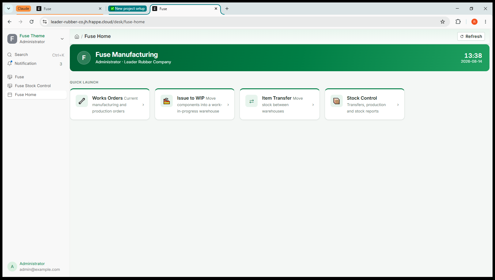

Before you start
What receiving is
A supplier delivers goods against a purchase order. Receiving is where you record what actually turned up: how much of each item, which warehouse it went into, and anything that arrived damaged.
Recording it does two things at once. The stock appears in Fuse, and a receipt is created in Sage Intacct against the same order. Both happen together, and Intacct goes first — so the two systems cannot end up disagreeing about a delivery.
Where the orders come from
Purchase orders are never created in Fuse. They are raised in Intacct and mirrored here read-only, so that stock on order shows in planning and reports. You can receive against one; you cannot edit it, and you cannot invent one.
If an order you expect is not in the list, it is not open in Intacct — check there rather than looking for a way to add it here.
Before you record anything
- Have the supplier's delivery note or invoice number to hand. It is carried through to Intacct on the receipt.
- Know how much actually arrived, not how much was ordered.
- Know whether anything arrived damaged, and how much.

Finding the order
- On Fuse Home, click Receiving.
- A list opens showing every order still expecting a delivery: the Intacct order number, the supplier, when it was ordered, when it is due, and how much has been received so far.
- Use the search box to narrow the list. It matches the Intacct order number, the Fuse order number and the supplier's name — so whatever is printed on the paperwork in your hand will find it.
- Click the row.
A fully received order drops off the list. That is deliberate: the list is what is still coming, not a history.
Recording the delivery
Step 1 — Read the lines
The order opens with one row per ordered line, showing:
| Column | What it tells you |
|---|---|
| Item | What was ordered, and which warehouse it is going into |
| Ordered | The full quantity on the order |
| Received | How much has already been booked in against that line |
| Outstanding | What is still owed — ordered less received |
| Accept | What you are booking in now, in good condition |
| Reject | What arrived damaged or wrong |
| Lot | The lot number, where Intacct tracks lots on that item |
Step 2 — Enter what arrived
Type the accepted quantity against each line. You do not have to fill in every line — receive what came, and the rest stays outstanding.
If you have a scanner, scan the item instead. Each scan steps that line's accepted quantity up by one and flashes the row, which is what counting cartons off a pallet actually is. Scanning something that is not on this order tells you so rather than silently doing nothing.
Rejects. Enter damaged quantities in the Reject column. They go to the receiving rejects warehouse, not into good stock, and they still count against the order — the supplier delivered them and will invoice for them.
If the Reject box is greyed out, no rejects warehouse has been set up. Speak to your administrator; do not book damaged goods in as accepted.
Lot numbers. Where a line asks for a lot, Intacct tracks lots on that item and the number is required. Where it says not tracked, Intacct does not want one and sending one would be refused.
Step 3 — Finish
- Enter the supplier's delivery note or invoice number.
- Check the Received on date. It defaults to today.
- Click Record the delivery.
Fuse sends the receipt to Intacct, waits for it to be accepted, and only then books the stock in here.
Receiving part of an order
You do not have to receive a whole order at once. Book in what arrived; the order stays open with the balance outstanding, and the next delivery is recorded the same way.
This is the normal way to work when a supplier splits a delivery.
If something goes wrong
| What you see | What it means and what to do |
|---|---|
| More is being received than this order expects | You have entered more than is outstanding. Check the quantity. If it really did arrive, confirm the prompt — but the system may still refuse it, and that is a decision your administrator controls. |
| No Intacct definition is mapped for "Receiving goods" | Fuse does not know which Intacct document to create. An administrator sets this under Transactions in Intacct Settings. Nothing is recorded until they do. |
| A rejected quantity was captured but no rejects warehouse is set | Rejected stock has nowhere to go. An administrator sets the receiving rejects warehouse in Intacct Settings. |
| This receipt covers more than one purchase order | Intacct receives one order at a time. Record a separate delivery for each order. |
| The ordered line carries no Intacct line key | The order mirror is out of date. An administrator re-runs the purchase order sync, then you receive again. |
| Intacct rejected the request | Nothing has been recorded anywhere. Read the reason; if you cannot fix it, send it to your administrator. |
Two rules that apply to everything in Fuse
Saving is not submitting
A receipt is only real once you click Record. Until then nothing has moved, in Fuse or in Intacct.
Cancel, never delete
A recorded receipt cannot be cancelled in Fuse, because undoing a receipt in Intacct is a separate transaction there. If you record a delivery wrongly, tell your administrator — it is reversed in Intacct first, not here.
Jobs that belong in Intacct
| If you try to | What happens |
|---|---|
| Create a purchase order | Not possible here. Orders are raised in Intacct and mirrored read-only. |
| Adjust stock up or down | Refused. On-hand corrections are made through a Cycle Count in Intacct. |
| Change an item, warehouse or supplier | Read-only here. These come from Intacct and a change would be overwritten at the next sync. |
Quick reference
Fuse Home → Receiving → find the order → enter or scan quantities → delivery note number → Record the delivery.
| Question | Answer |
|---|---|
| Can I receive part of an order? | Yes. The rest stays outstanding. |
| Can I create a purchase order here? | No. They come from Intacct. |
| Where do damaged goods go? | The receiving rejects warehouse, on the same receipt. |
| Do I enter a cost? | No. Intacct values the receipt. |
| How do I undo a receipt? | Through your administrator, reversed in Intacct first. |
Where this goes. Fuse and Sage Intacct hold the same stock. Anything you record here is sent to Intacct immediately, and Fuse only books it in once Intacct has accepted it. If Intacct refuses, nothing is saved in either system and you will see the reason on screen.